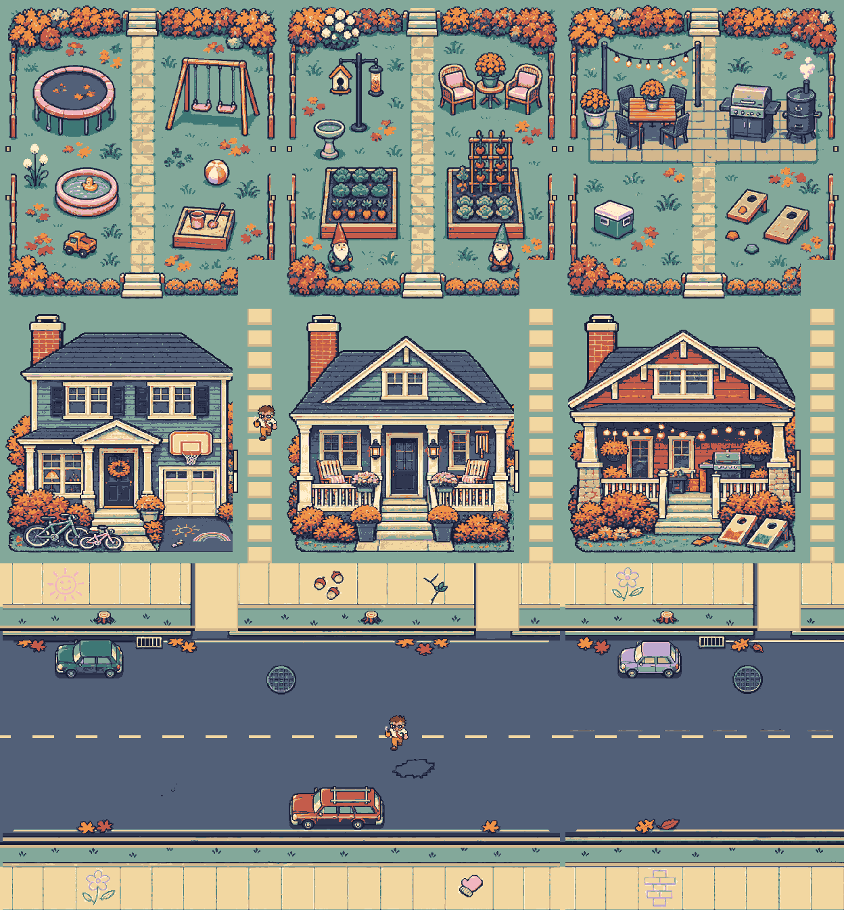
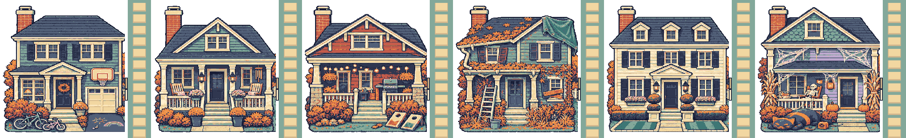
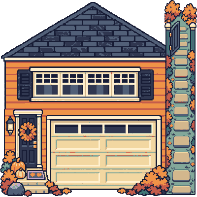
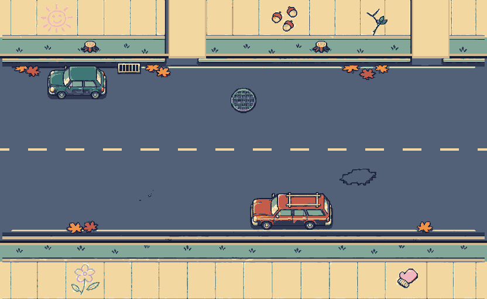
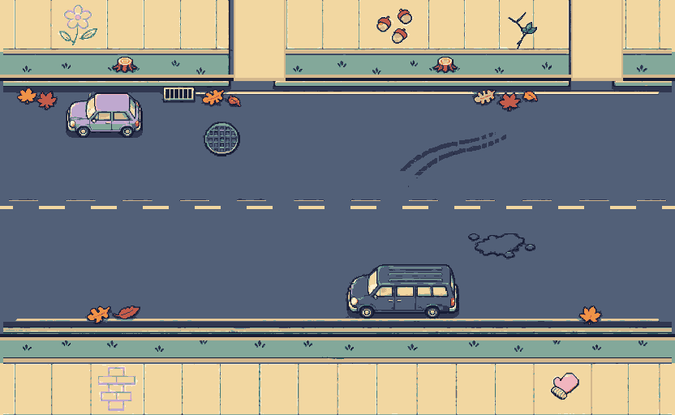
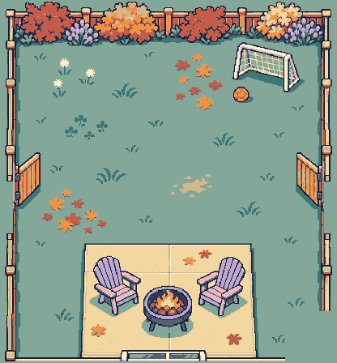
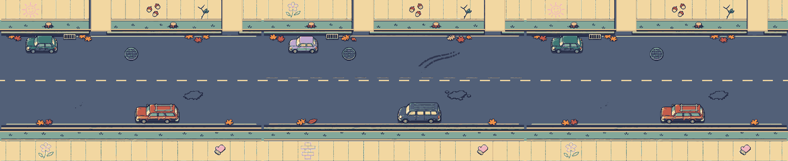

interior-floor1-v2.png · 416×1392

Prompt and export notes · Room, wall, door and furniture map
Ten native assets. Bigger houses, connected yards, wider street and Rami’s real floor plan. Local draft, no game changes or push. Garage follows Rami’s approval: one10′11″ ×20′ bay, minivan only.
Placement notes and limits · Manifest · Pixel checks · Prompts

Hero is the existing56x60 sprite. This is an art assembly, not a playtested map.





Prompt and export notes · Room, wall, door and furniture map

Prompt and export notes · Room, wall, door and furniture map
